Scope of the workshop
For three days, we will gather to explore the deep patterns underlying our world, from the mathematics of chaos to the emergence of collective behavior, tracing a journey that Stefano has done so much to chart. This won't be a classic conference: it will be a celebration of science and friendships, of a career and a community, and of the endlessly surprising Science of Complexity.
There is no registration fee. Accommodation and local transportation between the workshop venues are covered by the organizing centers. The Hangzhou workshop (October 20–22) is followed by a second meeting in Changsha (October 23–24); details will be announced soon.
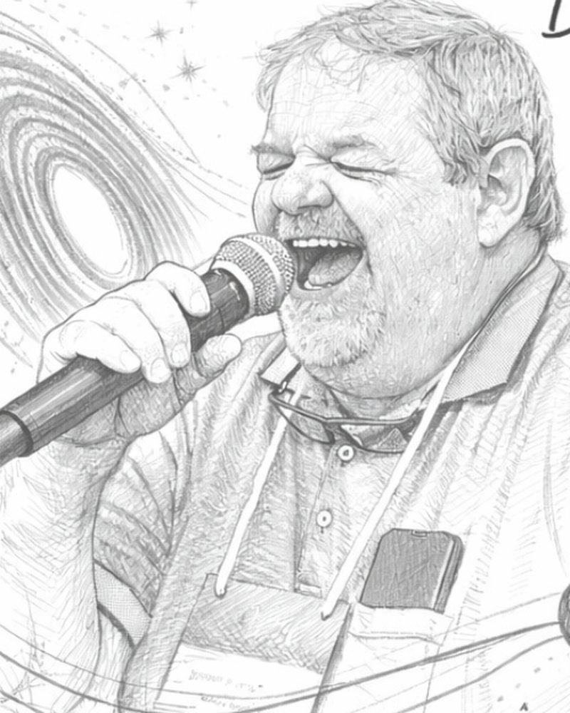
Celebrating Stefano
Stefano Boccaletti turns sixty on October 21st, 2026. From chaos control and synchronization to the structure and dynamics of complex networks, his work has shaped how a generation of physicists thinks about collective behavior. This workshop brings together his collaborators, students, and friends from across Asia and beyond to celebrate that journey.
Program
Talks are 30-minute slots (20–25 min + discussion). Titles marked TBA will be updated as they arrive.
Day 1 — Tuesday, October 20
Synchronization & collective dynamics Chair: Ludovico Minati
Roads to the synchronization in inertial Kuramoto model: microscopic perspective
Synchronization in time-varying and adaptive networks
Higher-order interactions induce chimera states in globally coupled oscillators
Chimera states without incoherence
Chaos & nonlinear dynamics Chair: Seba Contreras
TBA
TBA
Structure & resilience of networks Chair: TBA
About 6 Degrees of separation or How to Measure Importance in the Agentic Web
TBA
Small subgraphs in preferential attachment models
TBA
Day 2 — Wednesday, October 21
Propagation: from signals to brains Chair: TBA
Signal propagation and stability in complex networks
Firing propagation in empirical cognitive networks of the human brain
Complex networks theory and artificial intelligence: a synergy of approaches in modern brain disease diagnosis
Mobility & transport networks Chair: Seba Contreras
Network analysis on human mobility data
Quantifying spatial–temporal citation diffusion of individual papers in knowledge space
Day 3 — Thursday, October 22
Spreading & community structure in networks Chair: Robyn Kettlitz
TBA
Unintended consequences of behavioral adaptation to interventions in HIV control
Local dominance unveils clusters and community-centers in networks
TBA
Stefano Boccaletti
Day 4 — Friday, October 23 · Changsha
Day 5 — Saturday, October 24 · Changsha
Speakers
List expanding as talk titles are confirmed.
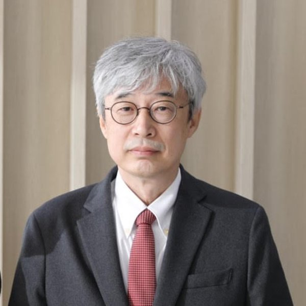
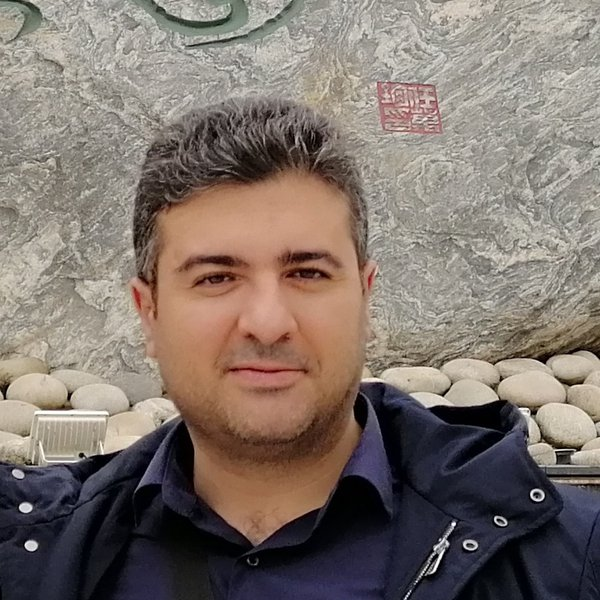
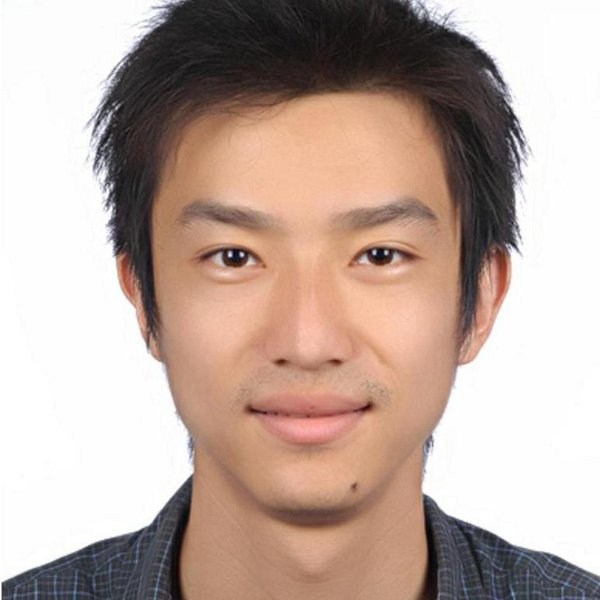
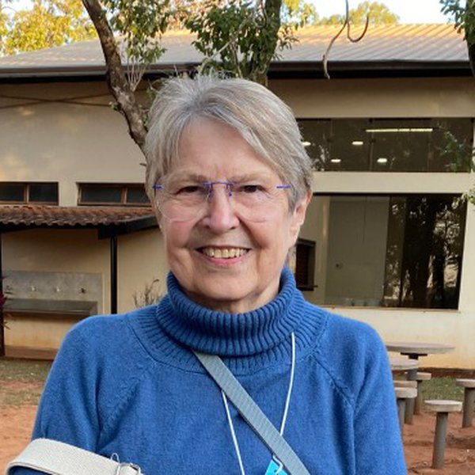
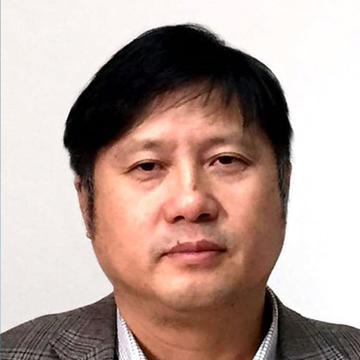
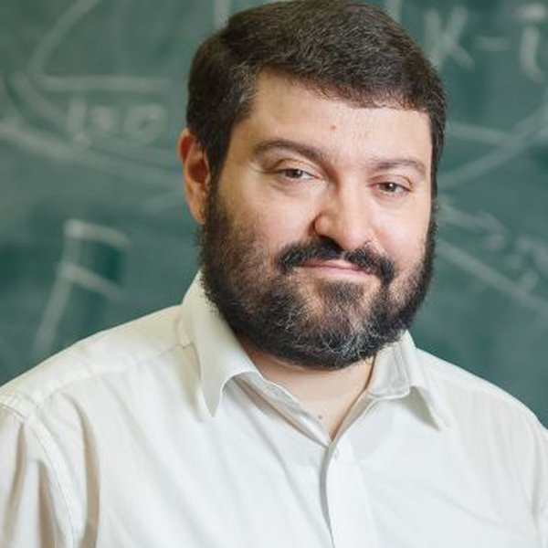
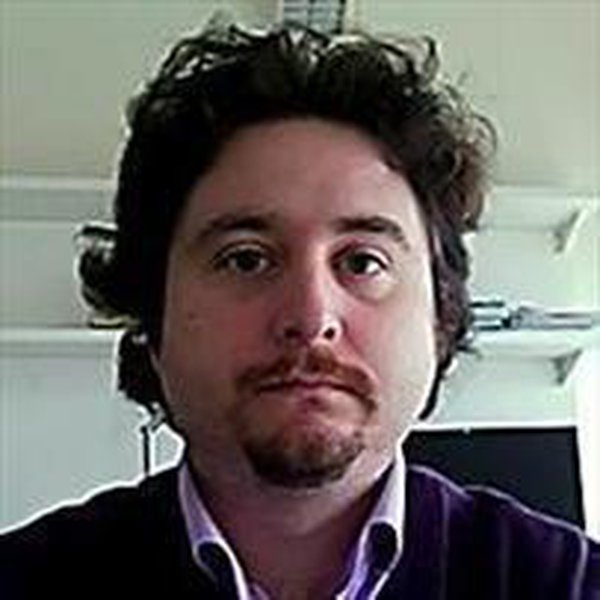
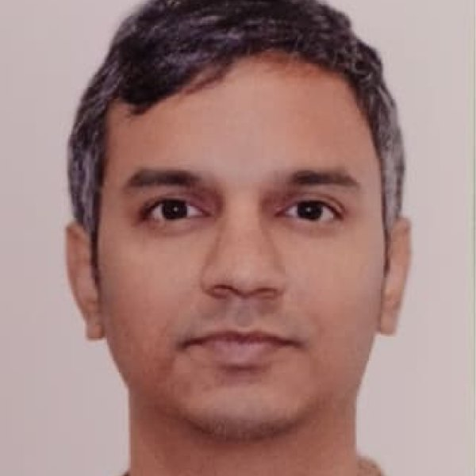
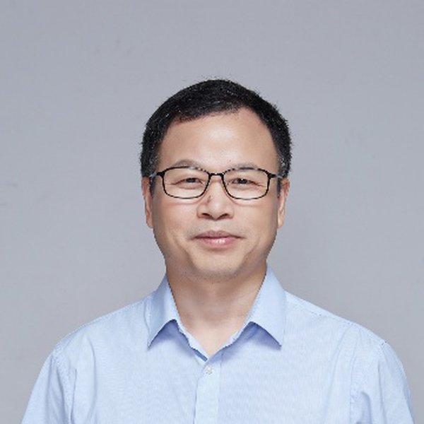
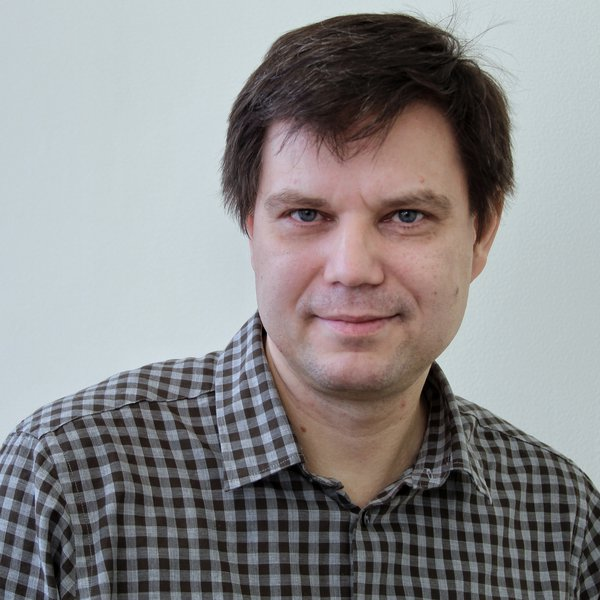
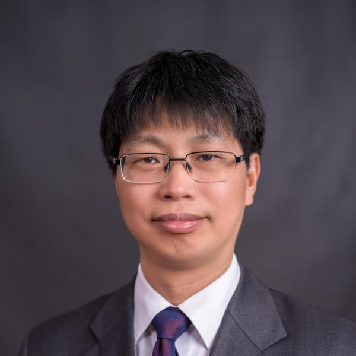
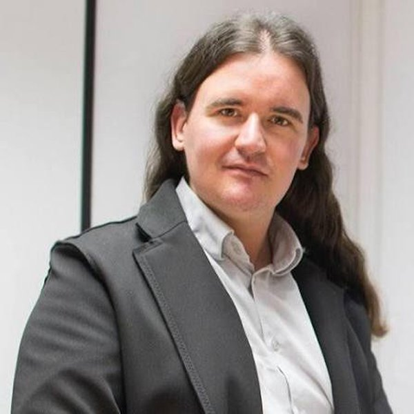
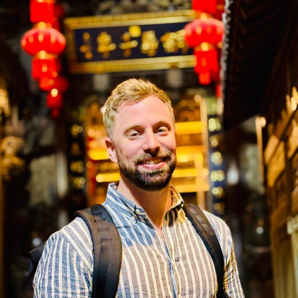

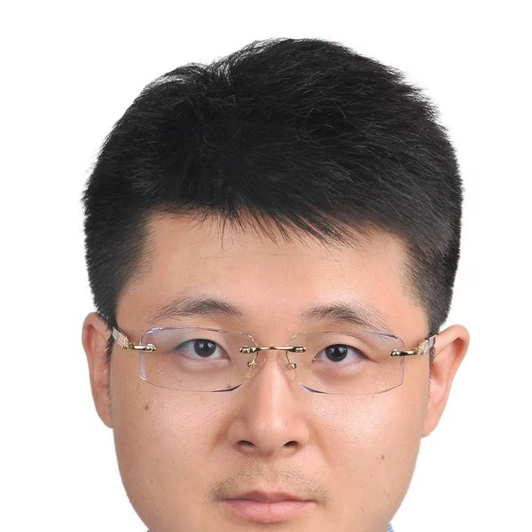
Venue
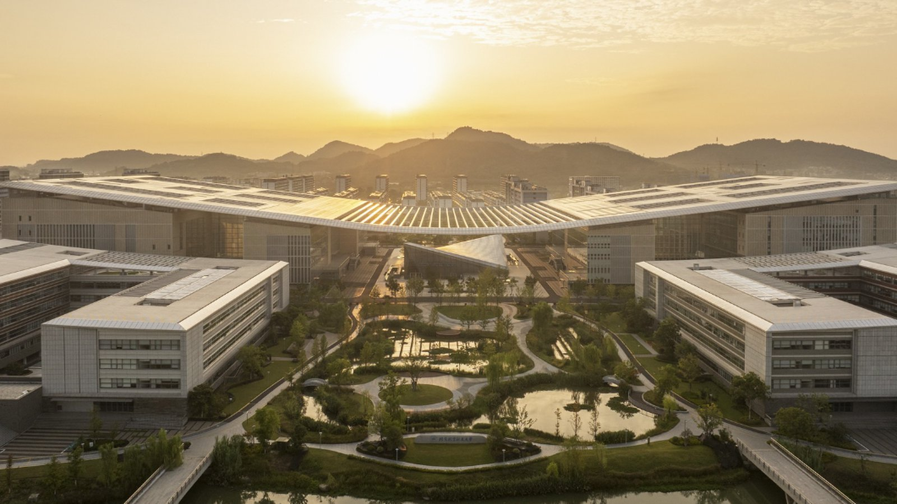
Hangzhou International Innovation Institute (H3I), Beihang University, Hangzhou, China
Visit Hangzhou, the so-called "Heaven" of China, and explore the H3I campus: campus video and Hangzhou surroundings.
Organizers
For queries about your participation, travel, or accommodation, please reach out to Dr. Han Zhen (hanzhen@nwpu.edu.cn) or to one of the organizers.

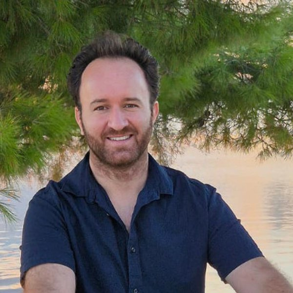
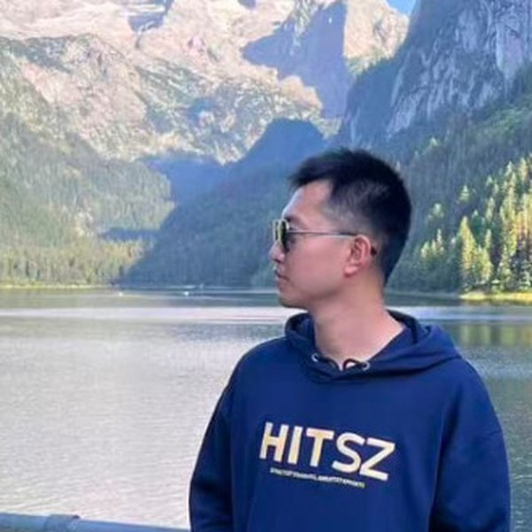

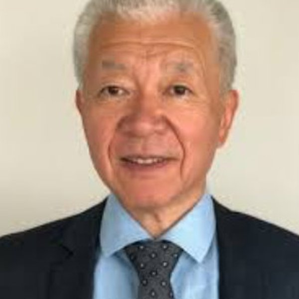
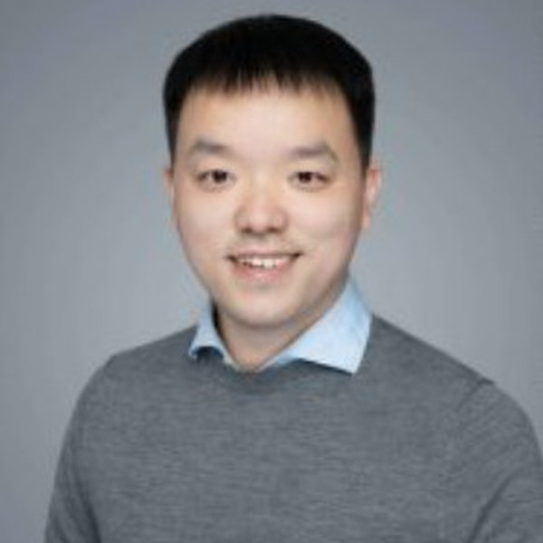
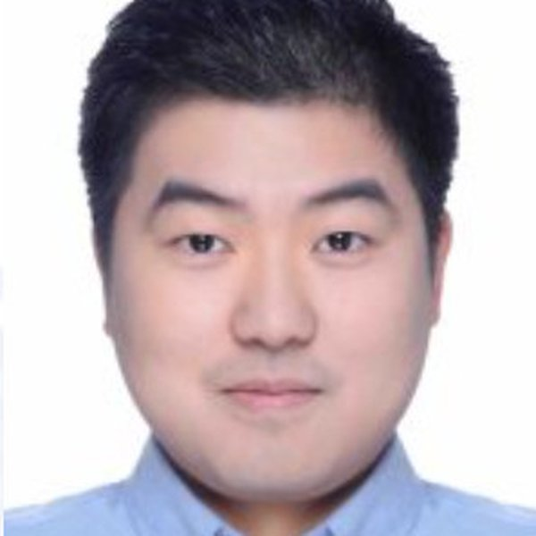